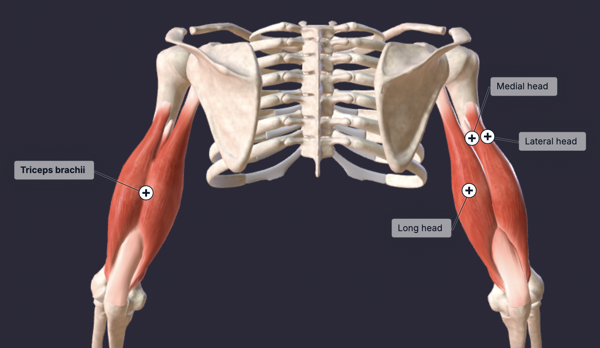

The triceps, scientifically known as the triceps brachii, is a large muscle located on the back (posterior) of the upper arm. It has three heads: the long head, lateral head, and medial head, which together form the horseshoe shape often seen on the back of the arm. The primary function of the triceps is extension of the elbow joint, meaning it straightens the arm. The long head also assists with shoulder extension and adduction because it attaches to the scapula, while the lateral and medial heads mainly contribute to powerful forearm extension at the elbow.
You should generally include one exercise that targets the lateral and medial heads, and another that emphasizes the long head of the triceps. The long head is at a mechanical advantage when the arms are stretched behind the body, thus the extensions listed are the ones that allow you to extend all the way back.
Note that is it in your best interest to keep your arm tucked to your body when doing the single arm cable extension.
